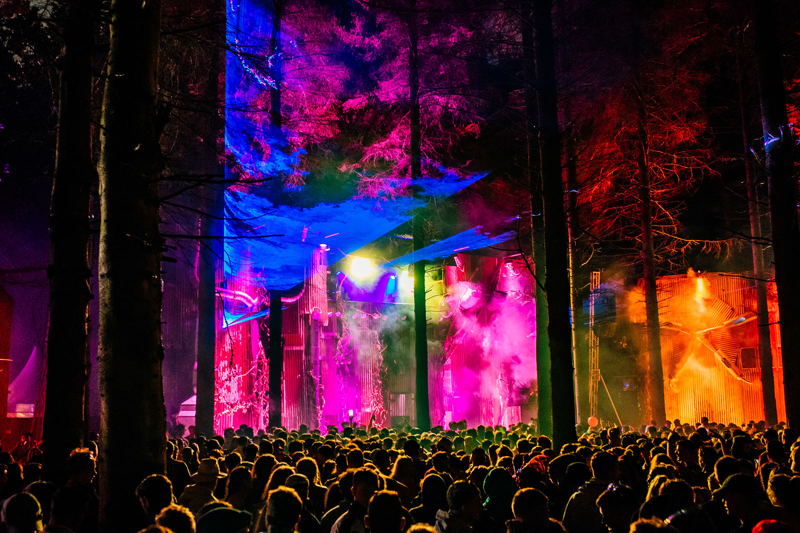

Electric Picnic is an annual arts-and-music festival which has been staged since 2004 at Stradbally Hall in Stradbally, County Laois, Ireland.It was voted Best Medium-Sized European Festival at the 2010 European Festival Awards, and has been voted Best Big Festival at each of the last four Irish Festival Awards since they began in 2007.

Electric Picnic differs from other festivals in Ireland in that the music choice is more eclectic than the other mainstream events (its history includes international acts such as Kraftwerk, Röyksopp, Nick Cave, Sonic Youth, New Order, Björk, Arcade Fire, Beastie Boys, The Stooges, The Chemical Brothers, Gary Numan, The Flaming Lips, Sigur Rós and Sex Pistols), and there is more emphasis on quality festival services (such as food and sleeping arrangements) and a generally more positive and relaxed atmosphere.[citation needed] There is also an emphasis on eco-friendly initiatives.